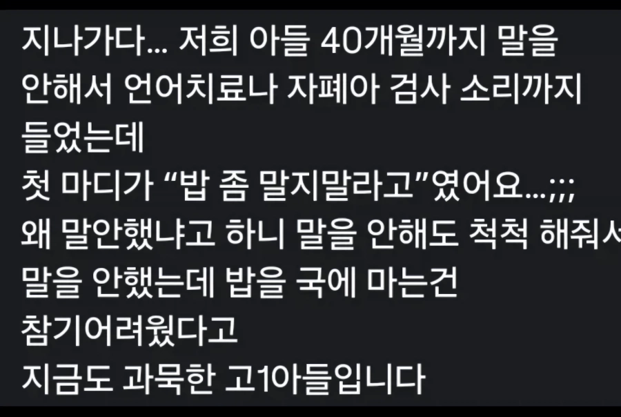

남자 특 불만 있을때 리뷰 남김
댓글
아시는 분이랑 비슷하네, 애가 말을 안 해서 걱정이라고 46개월이되었는데도.
자폐는 아닌 것으로 나왔고 다른 애들 보다 언어가 느리다고 나왔는데
충격적인것이. 애가 새벽에 거실에서 혼자 책을 읽고 있음 ,
엄마가 깜짝 놀랐는데,, 애도 엄마 보고 깜짝 놀란거야 .
엄마가 말 해봐 하니까 갑자기 입을 다물더래.
이유가 26개월 되었을 때 둘째가 태어났는데 엄마랑 아빠가 둘째만 좋아 한다고 생각하고,
지가 스스로 퇴행 시켰던 것임. 그러면 관심을 자기가 받으니까.
나중에 알고 보니 46개월인데 다른애들보다 빠르게 한글 다 읽을 줄 알 고 있었던 것임
지능도 다른 아이들에 비해 많이 높고 상위 1% 라고 들었다고 함.
ㅅㅂ 46개월이 그정도면 존나 똑똑하네
ㅋㅋㅋㅋㅋㅋㅋㅋㅋㅋㅋㅋ스스로 퇴행은 ㅅㅂ 머리가 얼마나 좋은겨
근데 둘째 낳은 집들에서 2-3살 차이나는 첫째가 그러는 경우 흔함
머리가 안좋은 애들도
동생 보고 스스로 퇴행 많이 해
말 잘하던 애가 말을 더듬거나
소변 잘 가리던 애가 오줌을 싸거나
나도 4살 때까지 말 잘하다가 동생보고
말더듬기 시작했는데
쟤 처럼 스스로 글을 터득하거나
할 정도 뛰어난 머리 전혀 아니고
걍 병신임
벌써 사고력이 남다르긴하네
지능이 좋긴 하네 ㅋㅋㅋㅋㅋ
4살짜리가 자기가 말하기 읽기가 느린척하면 부모한테 관심을 더 받는다는 사고를 했다는거부터 범상치가 않구만 ㅋㅋㅋ
똑똑한 애들은 자기 장기를 숨기는 경우가 많음
내 사촌동생도 비슷함 굳이 애기가 말이나 보채지 않아도 부모가 알아서 다 해주니까 말할 필요가 없어서 안한거라고
그거 사실 전생 아저씨여서 그럼
아시는 분 -> 아는 분 ㅠㅠ
고1 아들이라고 해주세요...
고1아들이라고 하니까 좀 그래...
커뮤좀 그만해 !!
저요?
뭔가했네 ㅋㅋㅋ
와 ㅋㅋ 이걸?
이걸 어떻게 그렇게 보1지
너 없었으면 모를뻔랬음
아1다들너무귀엽다
ㅅㅂ 처음보고 이해를 못햇음ㅋㅋㅋㅋㅋㅋㅋㅋㅋㅋ
야잌ㅋㅋㅋㅋㅋㅋㅋㅋㅋㅋㅋㅋ
자 1위한번....
고1추!
우리 아들 26개월인데 선택적 함묵증임
선생님, 맘마 주세요, 안녕하세요 등등 다하는데 시키면 씨익 웃으면서 도망감..언어치료하러갔더니 얘 다 할줄 아니까 데리고 집에가라더라
너 왜 말 안해? 아빠하고 엄마하고 말하기 싫어? 했더니 씨익 웃으면서 어깨들썩들썩 함..
그거 그정도면 일부러 반응보는거 아니냐 ㅋㅋ
내가 부모의 감정을 지배할수있다!!
관심받고싶엇나봐
이건 경고요
또 말면 국그릇은 죽소
첫마디를 저렇게 길게하나
ㅎㅎㅎㅎㅎㅎㅎㅎㅎㅎㅎㅎㅎㅎㅎㅎㅎㅎㅎㅎㅎㅎㅎㅎㅎㅎㅎㅎㅎㅎㅎ
한 번 더 밥을 말면 내 손에 죽소
ㅋㅋㅋ 아씨 존나 웃기넼ㅋㅋ
알아 들었나
zzzzzzzz
과장이 좀 많이 섞였을거같네.. 실제로는 말을 안해도 알아서 척척척 다 해주면 언어발달에 방해가됨. 본인이 필요해야 발화가 잘 나옴. 그래서 발달센터에서 학부모 상담하면서 많이 보는 케이스가 맞벌이여서 조부모가 주로 양육하는데 할머니가 이쁜손주라고 그냥 "으에엥"정도만 해도 귀신같이 비위맞춰주고 옷입혀주고 벗겨주고 다해주고 그러는 경우가 많다함
지인 딸도 워낙 말이 없어서 어린이집 다녀오면 선생님에게 물어봐야만 그 날 뭘 했는지 알 수 있었다던데 ㅋㅋ
고아들
깍두기 국물도 부어보자 혹시알아 영어도 튀어나올지?
나도 한 5살까지 말 안한다고 엄마가 자폐의심부터 정신과 열심히 다녔는데
그냥 말없음아동 엔딩났음
치료? 는아니고 말 안하다가
그냥 닌텐도 게임얘기할때는 하루 종일 떠들어서
말하기 귀찮았나 보다 했대
나도 어렸을때 집중못하고 산만한데다 사고도 많이쳐서 5살때 엄마손에 끌려서 도에서 하는 뭔아동 정신과 상담센터 뭐시기에 갔음
그때 로르샤흐 그림검사에서 걍 천진난만하게 웃으면서검정색은 괴물이라고 하고 빨간색은 피뿌린거 같다고 했는데 결과 어떻게 나왔었으려나...
https://youtube.com/shorts/wDEMdWQqscw?si=QQn0Ru-rj6aji12A
진짜 싸나이네 ㅋㅋㅋㅋㅋㅋㅋㅋ
따로국밥 맛잘알
밥 마는게 오히려 소화도 안된다
(씹어야하는데 그냥 삼켜서)
우리집도 애 눈빛만 봐도 뭐 원하는지 알아서 다해주니
애가.말을 너무 늦게함ㅋㅋㅋㅋㅋㅋ
그 무슨 육아만화에서도 애가 말을 안해서 엄마아빠가 걱정했는데 애가 한 첫마디가 치킨 다리 자기 달라는 거였을껄? ㅋㅋㅋㅋㅋ
작은 조카도 똑똑한데 일부러 글 못 읽는 척함
피카츄+이브이 진화체는 다 읽음
구라같은데
걍 꾹 참았음 어린이였네 ㅋㅋ